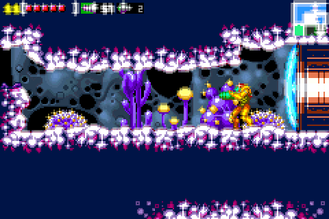
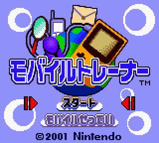
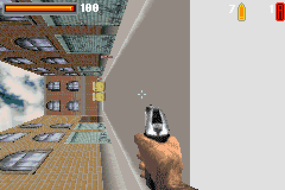
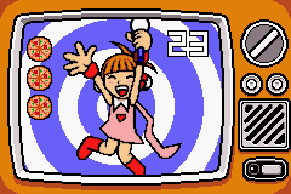
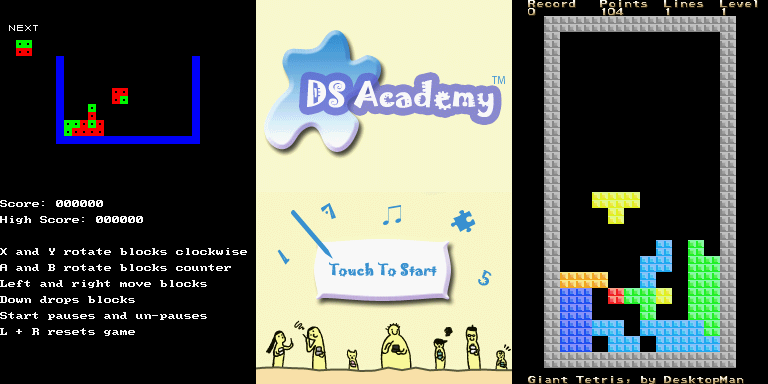

It has been a little less than a year since 1.0 came out last summer, but since then, GBE+ has made tons of progress. I intend to keep the introductions short and jump straight into what was added over the past 10 months or so.
June 2016 - SDL2 upgrade + Game Shark and Game Genie Support
The move to SDL2 happened right after 1.0 was officially finished. Previously, GBE+ used SDL 1.2 for a host of core functions, such as drawing to the screen, handling user input, and playing sounds from emulated games. SDL 1.2 did a fine job of all of the above, but moving to a newer version was necessary for a few reasons. The biggest factor came in the form of context management for OpenGL. SDL 1.3 could set up OpenGL 3.3+ contexts, and that feature can be hacked back into some versions of SDL 1.2, but both could be unstable. SDL2 does away with all of that uncertainty and frustration, allowing GBE+ to utilize modern OpenGL code and implement cool things like GLSL shaders. SDL2 also brought haptic feedback to GBE+, so now games like Pokemon Pinball can take advantage of joysticks with rumble motors
While cheats were not a priority in 1.0, they were quickly added to 1.1. GBE+ now supports Game Shark and Game Genie cheats. A cheat file can be created and loaded up into the emulator, and a spiffy GUI helps users manage everything. Fun fact: GBE+ can use GS and GG cheats simultaneously, a feat in real-life that isn't feasible without hardware mangling.
July 2016 - DMG and GBC Netplay + Basic GBC IR emulation + GB Printer support
Netplay was always something I've dreamed of tackling. As a kid, I had many GBC games with multiplayer modes that I never knew what they were like. It was easy enough to find a friend with another Game Boy, but good luck getting the same games (unless it was Pokemon). In my first years with emulators in the early 2000s, I never could get netplay working in other GB emulators (user error) so until last year, it was pretty much a mystery. Adding netplay support to GBE+ turned out surpisingly well, especially for someone with no previous knowledge of network coding whatsoever.
In tandem with support for the DMG and GBC link cable, I managed to add basic support for the GBC infrared port. The backstory to this: I was browsing the EmuDev subreddit and noticed someone else was trying to get this working. With GBE+ now able to connect two instances of the emulator, I figured I'd give it a shot. The IR port is a rather obscure feature of the GBC that often gets ignored by other emulators (and even most commercial games ignored it...) but that only made it interesting to me. I threw some code down but didn't anticipate anything working. However, rather than blowing up my computer, things actually worked, on the 1st trial no less. This was probably one of the most unexpected moments I've had so far in my time as an emulator developer. Even so, the success was short-lived, GBE+'s implementation of the IR port only seems to work with the Pokemon games (Gold, Silver, and Crystal). Other titles like Perfect Dark or Super Mario Bros. DX failed. So while it's only good for 3 games, GBE+ can now emulate Pokemon Mystery Gifts and transfer data to the Trainer House in Viridian City.
Oh yeah, GB Printer support was added, but I already covered that extensively in a previous article

GBC IR port emulation in action!
August 2016 - Post-processing GLSL shaders
Shaders are a fun way of making games look exactly how you want them to, and the great thing about shaders is that they put all heavy work on the GPU, freeing the CPU to go about its business. With SDL2 in place, GBE+ added support for post-processing shaders. Admittedly, most are silly or novelty effects, but some are used for enhancements such as Scale2x, xBR, and options to adjust the color palette to match the desaturated GBC and GBA screens. The framework is now there for other GLSL shaders as well, so other graphical effects can be added in the future. One thing to note is that Custom Graphics - aka CGFX - can be used in conjunction with post-processing shaders!

Metroid: Zero Mission with some... "interesting" bloom
October 2016 - GB Mobile Adapter + GB Camera + Patches
October was a busy month indeed. After browsing a topic in the Game Boy subreddit, I learned that most of the information about the Game Boy Mobile Adapter had been documented on the Glitch City Forums. Some intrepid folks had come up with a nifty Python script that could be used with BGB to emulate the adapter and a connection to a server. The GB Mobile Adapter was used for select Japanese GBC and GBA titles (notably Pokemon Crystal and Mario Kart) for online play through cell-phone networks. With all the technical details in hand, and example Python code, I added basic support for the Mobile Adapter into GBE+. As such, GBE+ was the first emulator to natively support this adapter without the use of external hooks or scripts. Turns out that the Mobile Adapter was strikingly similar to the GB Printer in terms of getting it to work with GBE+. A lot of stuff has yet to be emulated properly (mainly specific HTTP server responses) but at least the Mobile Trainer boots up.
The GB Camera was another bucket-list item checked off. GBE+ supports dynamically loading an image file while the game is running, so this picture will appear when snapping photos through the GB Camera. Last but not least, October saw support for IPS and UPS patches. Unfortunately, I never got around to adding BPS support (sorry byuu!)

Fun fact: the GB Mobile Trainer actually had a barebones web-browser, on your GBC
November 2016 - GBA audio rewrite
I won't mince words: GBA audio in GBE+ was stupidly bad. Terribad. Horrible sound, like a garbage disposal surgically attached to your ears. Okay, that's a bit hyperbolic, but it wasn't good enough. Previously, I wouldn't have used my own emulator to enjoy GBA games, and that's just wrong. So, after a lot of thinking, I just dived in and did a fairly large rewrite of the audio handling code. Now GBA audio sounds much more acceptable. Crackling has been significantly reduced. The caveat is that on most systems, it only works by setting the frequency to 48KHz. With computers these days, that shouldn't be a problem.
December 2016 - MMM01 support + GBA BG affine fixes
For most people familiar with NES emulation, NES carts had dozens of variations known as mappers. Each mapper has its own way of accessing the cart's RAM and ROM. To correctly play games that use a mapper, that mapper must be correctly emulated. The Game Boy is in a similar positon; it has different types of carts that have their own Memory Bank Controllers. One of the more exotic types is called the MMM01, a multi-cart mapper that crams different game ROMs into a single cart. It uses magic to correctly switch between games without any changes to their ROMs. The MMM01 technically boots code from the last section of its ROM, generally to display a menu so players can switch to different games. It's a curious little oddity as only a handful of games (less than 5?) actually use it, but I couldn't resist adding it to GBE+
For a good while now, GBA games that used Mode 7-like graphics were completely messed up in GBE+. That meant games like Mario Kart and F-Zero were utterly unplayable. The problem stumped me for over a year, until I figured out what I was doing wrong all this time. The GBA doesn't actually have a Mode 7 or anything like the SNES did. Instead, GBA games mimic the effects by changing the way they apply affine transformations (like scaling, rotation, shearing) one every scanline. The GBA is supposed to reset the way it counts some X and Y reference points any time affine transformations are updated, and GBE+ kept using the old X and Y references instead of the new ones. A simple error that led to headaches upon headaches, but at last things are better.

One of the many errors due to poor BG affine support.
January 2017 - OBJ affine + GBA save state support
Following the fix for GBA background affine transformations, the path was clear for adding affine transformations to sprites. Many games use affine transformations on sprites for various effects, either to blow them up really large, to shrink them down super-tiny, or just to rotate them. The fact of the matter is that a lot of games just aren't complete without OBJ affine transformations. This basically brings GBA compatibility to a playable and enjoyable status. Given that the GBA core is mature enough, save state support was also added. Not much to say about that; it should be mostly stable.
Febuary 2017 - GBA GPIO Support
At long last, GBE+ finally supports General Purpose Input/Output for specialty GBA games. This means games like Boktai, WarioWare: Twisted, and Drill Dozer can all be played. For Pokemon Ruby, Sapphire, and Emerald, this means the RTC is enabled; for Drill Dozer rumble is enabled; for WarioWare: Twisted the gyroscope is enabled; for Boktai the solar sensor is enabled; for Yoshi Topsy Turvy (aka Universal Gravitation) the tilt sensor is enabled. The GBA doesn't have a lot of special carts like the DMG and GBC did, but it was fun tackling these ones, especially after I failed miserably with my first attempt about 2 years ago.

Now you too have the Mona's Pizza song stuck in your head.
March 2017 - CGFX OBJ Meta Tile editor
GBE+ 1.0 had a feature that allows users to dump a section of the background as a single image, a meta-tile. This was great for quickly editing something like an entire logo on an intro screen. While background tiles were readily handled, users still had to dump and edit sprites one tile at a time. For any serious work with CGFX, this is unacceptable, thus a new editor was born. Users can make their own "sprite-sheets" by piecing together sprites from the game. This is much more efficient than the old method, and it allows people to quickly dump and edit graphics
Behind the scenes... and into 1.2
That covers all of the signifiant progress made to the master branch in the past year. A lot of work has been going on for the NDS core behind the scenes in a separate branch. It's not merged with master just yet, so 1.1 has no NDS support. 1.2 will be a different story. Things are still basic, but some homebrew actually works nicely. Progress about that will be detailed in the next report. For now, it isn't much, but here's some proof that things are coming along

With 1.1 out of the way, NDS support will become a larger focus
So where will GBE+ end up when 1.2 rolls around? Well, I have my eye set on quite a few areas. A Super Game Boy core would be great. A separate core seems like the best course, since the DMG/GBC core is getting quite large code-wise. Support for the e-Reader is something that's been tickling my fancy for a while now. GBE+ works fine with the e-Reader ROM and an appropiate SAV file, but I want it to be able to "scan" cards based on BIN and RAW files. The GBA core needs a rewrite, specifically LCD rendering; it's currently very slow since it does per-pixel rendering every 4 emulated cycles instead of rendering every scanline all at once. And obviously, the biggest goal would be to get the NDS core booting its first commercial title.